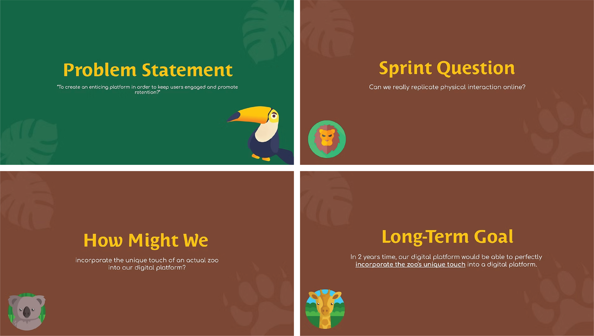
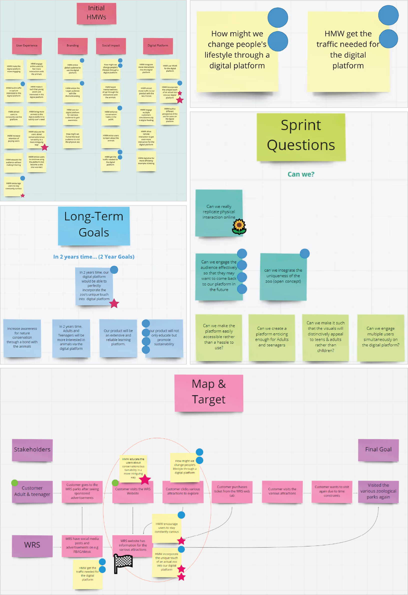
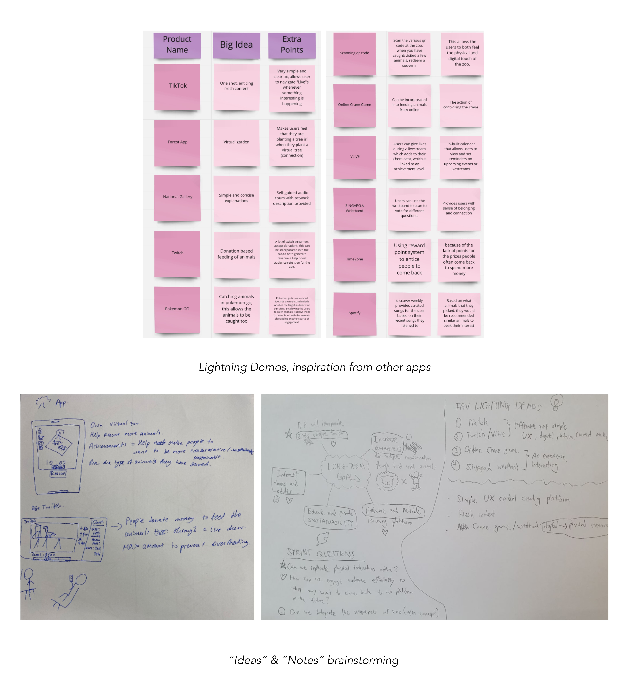
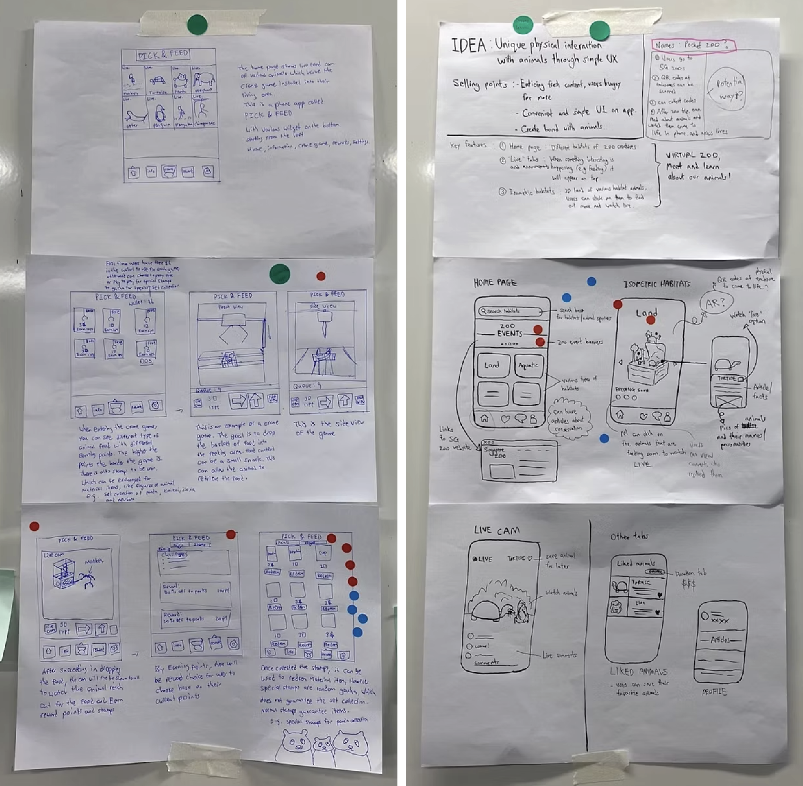
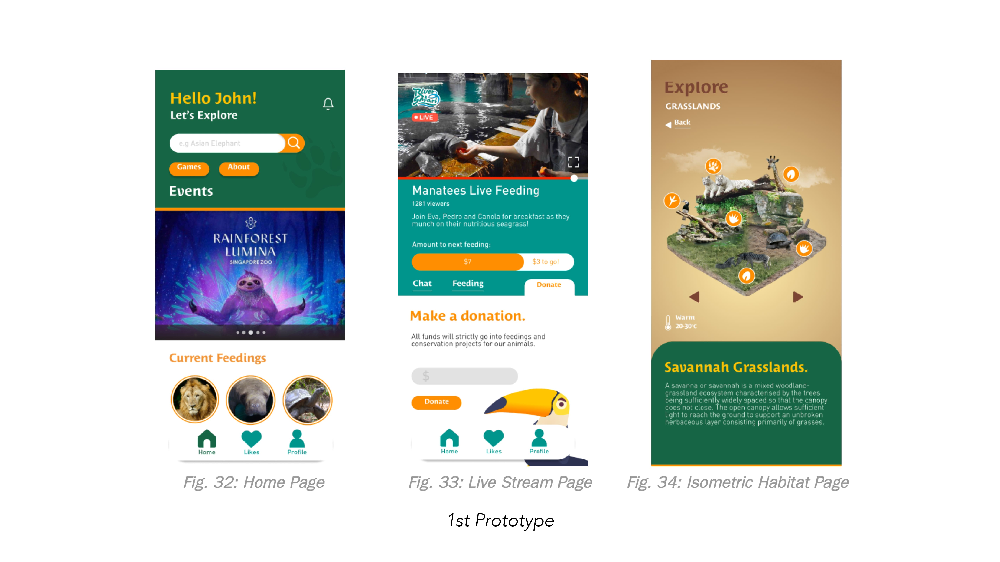
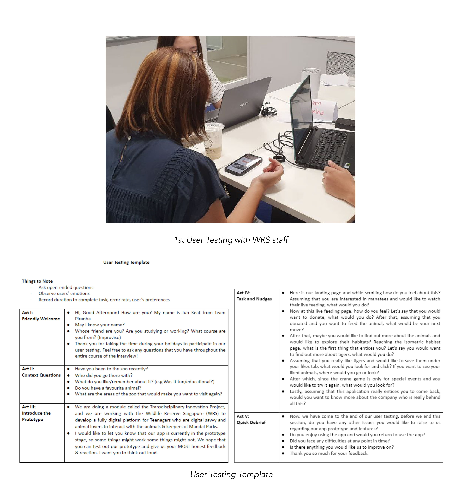
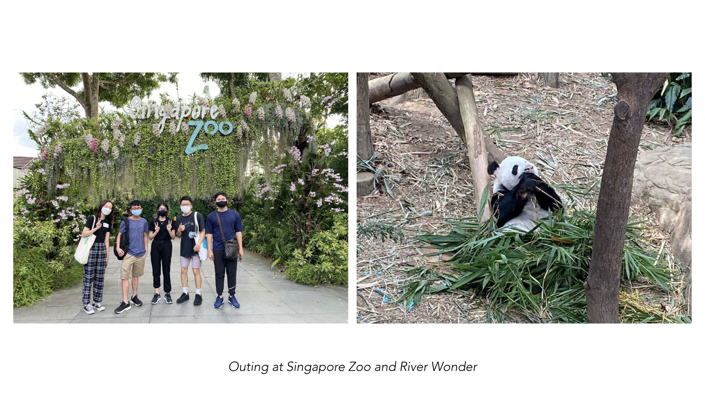
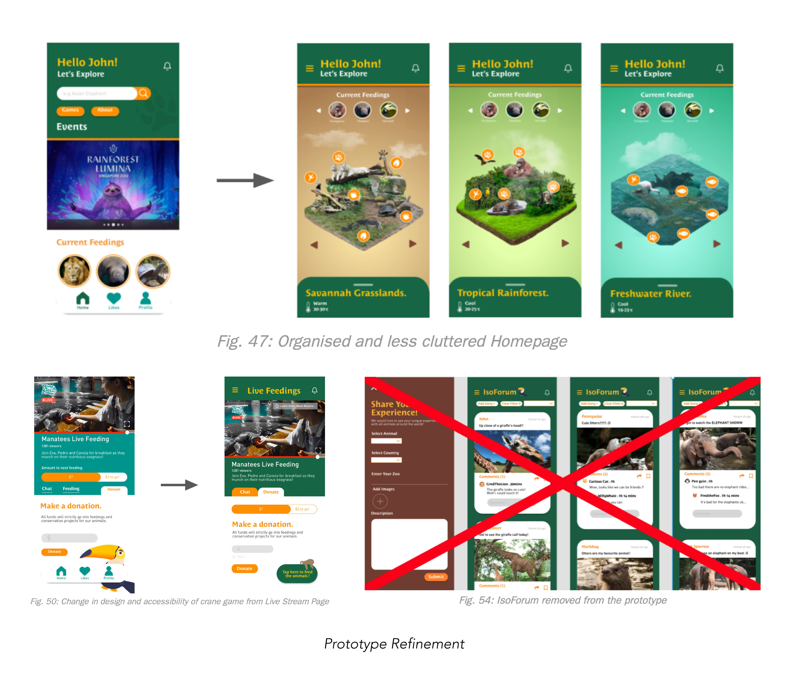
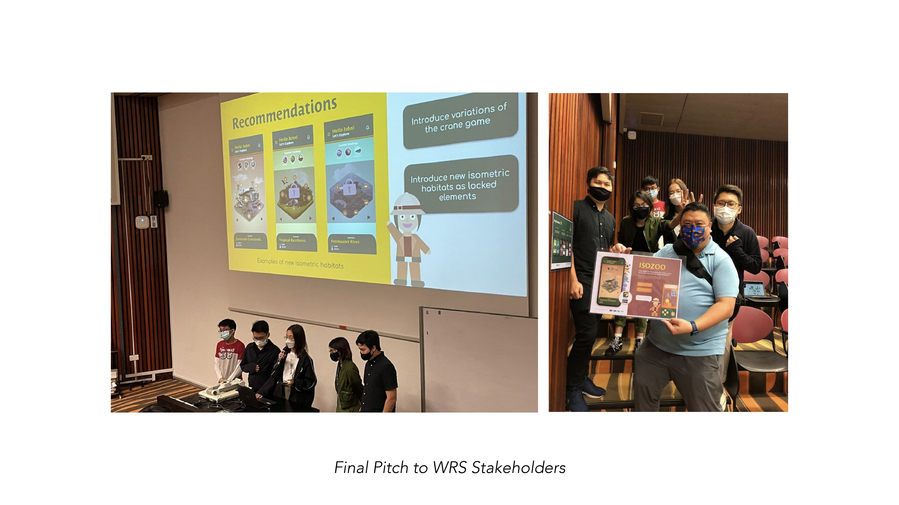

ISOZOO App
Digital App
Client: Mandai Wildlife Reserves (Formerly WRS)
School Project • 2021
Children love to visit zoos because they can get up close and personal with their favourite animals but the visits, while regular, are not on a daily basis. MRS is looking for innovative ideas and prototypes that can allow people to experience their Wildlife parks digitally. This project was done during a short design sprint of 10 days in collaboration with MRS, from the ideation, prototyping, user testing, to the idea pitching stage.




Isozoo App prototype
Snippets of the Design Sprint Ideation Process
[ 1: Opening Sprint ] In this opening sprint, we identified key challenges to address first, aiming to build momentum and establish a foundation for the project. After interviewing MRS and noting their concerns in the HMWs (How Might We), we grouped them into four clusters and shortlisted two. We then envisioned our long-term goals and developed sprint questions, focusing on "Can we really replicate the interaction online?" Finally, we mapped the customer journey from seeing a sponsored WRS ad to visiting attractions, which helped pinpoint the problem area.

[ 2: Lightning Demos & Brainstorming ] We reviewed existing apps in the industry, drawing inspiration from how their features were implemented, with our thoughts categorised as the "Big Idea" along with other insights. Afterward, each of us created our "notes," copying the most voted HMWs, Sprint Questions, and Lightning Demos onto a blank sheet of paper. Since each member had their own method of organising information, this helped us consolidate our thoughts better.

[ 3: Solution Sketching ] After further ideation, we moved on to solution sketching, where we quickly drew up the wireframe of our app and its key features. Stickers were then placed on the features with the most potential by our classmates, MRS staff, and teachers. We then shortlisted the features with the most stickers within our team and combined the ideas together.

[ 4: 1st Prototyping ] We moved on to prototyping our product, first designing the key pages and then linking them together in Figma to create a working prototype.
*Wireframing would have been crucial during the app creation process. However, due to tight time constraints and the absence of a wireframing activity, we proceeded directly to prototyping.

[ 5: 1st User Testing ] After prototyping, we user-tested our app with classmates and MRS staff to ensure its features and user experience were well implemented. We crafted a template of interview questions to make the most of our limited time, as we only had 30 minutes per person. The rest of the team acted as scribes, jotting down key points of what have been done well and difficulties to be improved on.

[ 6: Field Day ] We visited the Singapore Zoo and River Safari to collect assets for our prototype. This trip allowed us to experience the customer journey firsthand, helping us identify missing aspects in our prototype and better integrate the physical park experience into our digital platform.

[ 7: Prototyping Refinement ] Using the feedback we gathered, we redesigned some pages and further improved our app, enhancing both its aesthetics and functionality. We simplified the design and reduced the number of features. Initially, we had an Isoforum page where users could post pictures of the animals, but our users found it confusing and felt it added no value, so we removed the feature, giving more spotlight to our isometric island idea.

[ 8: 2nd User Testing ] After refining the prototype based on first-round feedback, we conducted a second round of user testing to assess if the improvements met expectations and identify further areas for improvement. The feedback was largely positive, with users praising the clean interface and informative isometric habitats. This confirmed that our prototype was becoming more polished, and we continued refining it in preparation for the pitch presentation.

[ 9: Final Pitch ] Finally, we completed our pitch deck and presented our idea to everyone. Our team was very happy with our performance, as we demonstrated great teamwork, despite not knowing each other before this module. We were proud of what we achieved in just 10 days, especially considering that most of us were unfamiliar with design thinking beforehand.
